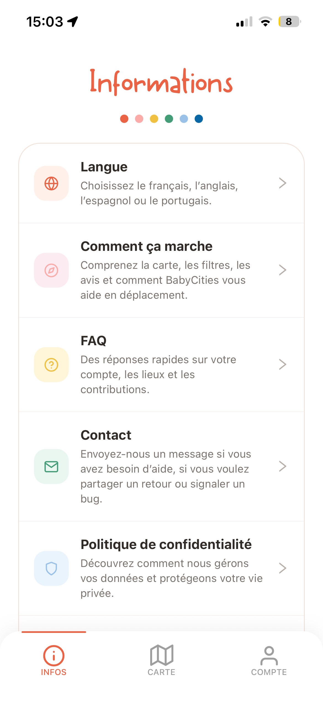
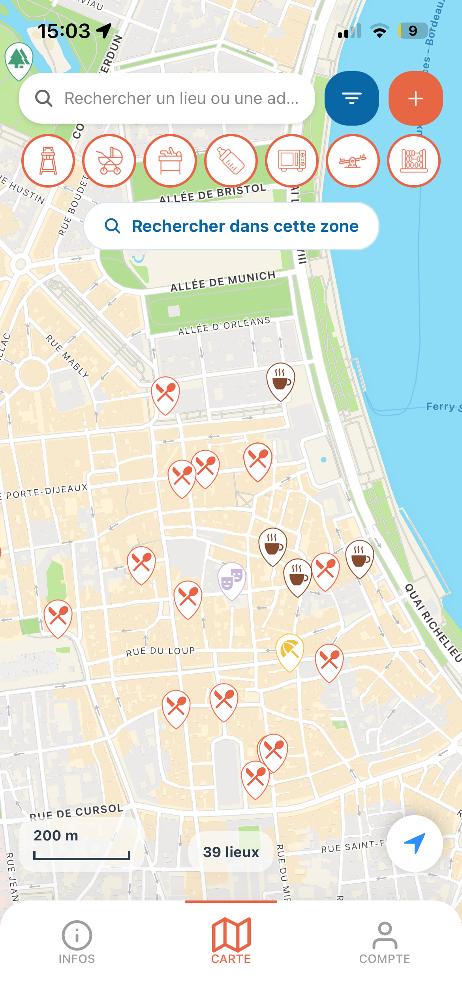
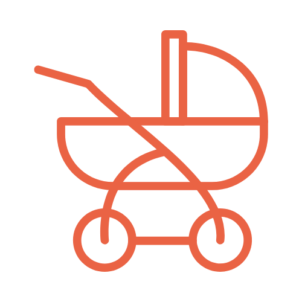

-
places shared
Made for parents on the go. Find baby-friendly places in your city, check the useful amenities before you go in, and share your own experiences with other families.


Explore around you and discover kids-friendly places before heading out.
Keep your best spots close by and build your own shortlist for easy family outings.

Filter according to your needs, whether it is baby amenities or the type of place you want.
Rate places and leave practical reviews to help other parents know what to expect.
Add useful new places to the map when you find somewhere that works well for families.
Share the app with other parents and help BabyCities grow into an even more useful community.
With baby filters and place types, you can find a spot that fits your needs around you or ahead of time when planning a trip. Thanks to the BabyScore and reviews shared by the community, choosing a place feels easier, more reliable and more reassuring.
Baby filters help you check the small but essential details that make outings with babies and young kids much easier. Instead of guessing once you arrive, you can quickly see whether a place has the practical amenities your family actually needs, from stroller access and changing tables to high chairs, nursing areas or a microwave.
Quickly spot places where diaper changes are easier and better prepared.
Find cafes and restaurants where your baby can actually join the table comfortably.
Check where warming a bottle or a meal is possible before you arrive.

Filter for places that stay practical when you arrive with a buggy or stroller.
Filter for places where feeding breaks feel calmer and more comfortable when you are out.
Find spots with a play area nearby when toddlers need to move and reset during the outing.
Spot places that include a small play bonus and make the stop more enjoyable for little ones.
A few of the reasons parents keep coming back to BabyCities before an outing.
“Thanks for such a practical and user-friendly app. Get yourself out of a sticky situation with your kid in no time with BabyCities and find the perfect place on the go. #Lifesaver”
“Such an amazing idea for parents and grandparents. I can't believe there wasn't something like this sooner!”
“Thanks for such a practical and user-friendly app. BabyCities helps you find the right place quickly when you are out with kids.”